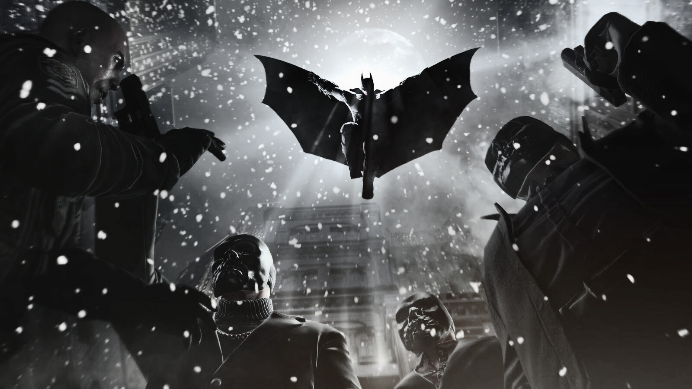

BATMAN
SALVADOR OU AMEAÇA?
As recentes aparições do Batman têm sido o tema dominante nas conversas dos moradores de Gotham. Em uma cidade envolta em sombras e mistérios, a presença desse vigilante enigmático não passa despercebida. Alguns o veem como o guardião que a cidade tanto precisa, capaz de enfrentar a onda de caos e criminalidade que a assola. Para esses indivíduos, o Batman é um símbolo de esperança em meio à escuridão.

E se o Batman for necessário, quem o elegeu? Nós o povo? Nós da alta sociedade?
Nós da periferia? Nós dos orfanatos? Essa é a pergunta que todo cidadão(a) de Gotham deveria fazer a si mesmo.
Não é normal um comportamento deste tipo. Quantos outros não irão se inspirar nesse maluco vestido de morcego e tentar agir com as próprias mãos.